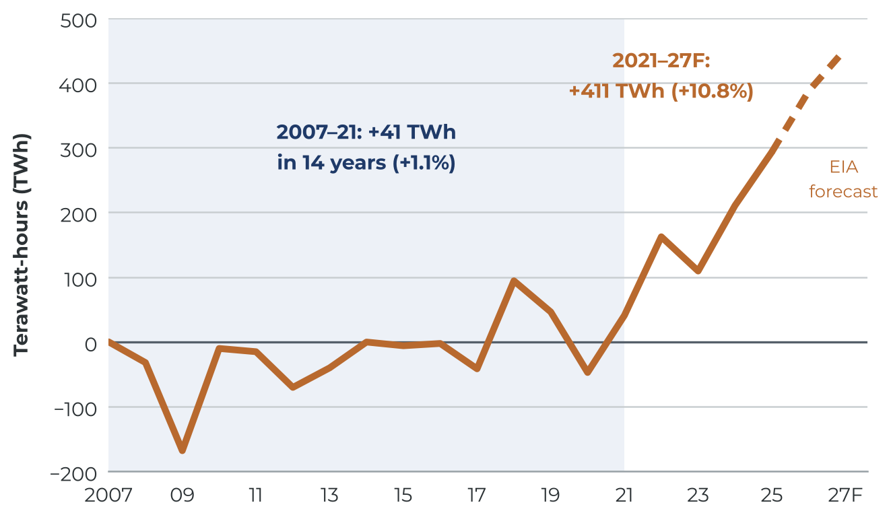
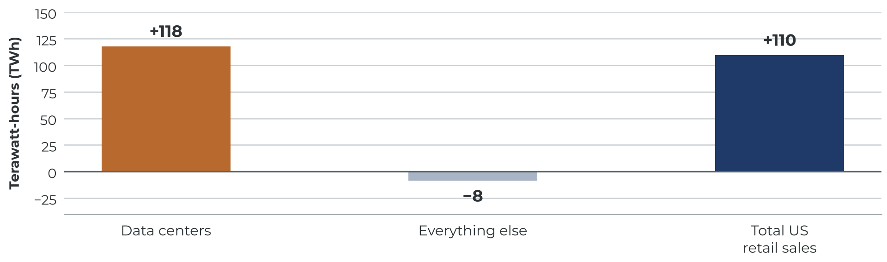
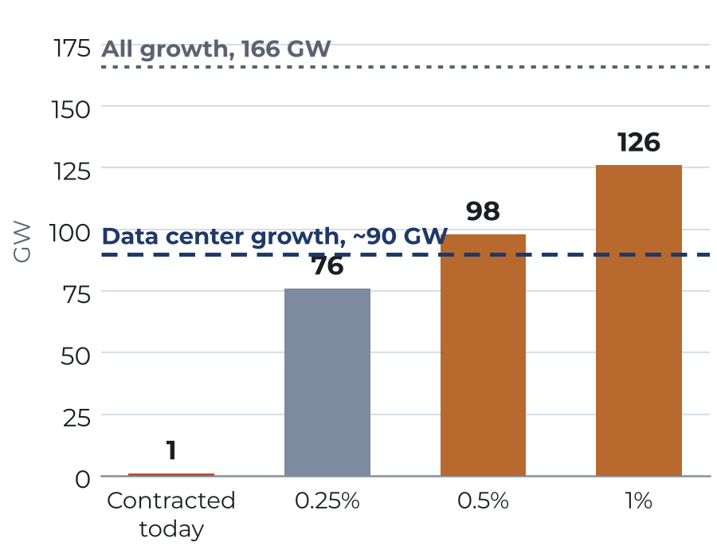
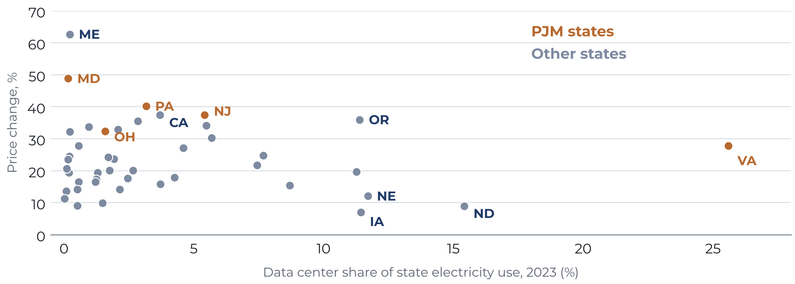

Load Bearing
AI data centers, the end of flat demand, and the remaking of the utility planning order

Key implications
US retail electricity sales reached a record 4,058 terawatt-hours (TWh) in 2025, after 14 years in which they barely moved. In times past, growth of this kind would have been absorbed by a familiar machine: utilities would forecast it, regulators would approve the plants and wires to serve it, and every customer would share the cost. Yet the machine is jamming. PJM's capacity price has risen elevenfold in two auctions, Texas has 474 gigawatts (GW) of large loads waiting to connect, and on 9 October federal regulators declined to let PJM decide whose power is cut first. KPA analysis shows why. Data centers accounted for roughly all US demand growth between 2014 and 2023, and the plants that would serve them now take longer to arrive than the forecasts that justify them. The question is no longer only how much to build, but who bends when the system runs short.
- The utility does not, cannot, and will not always be able to build ahead of the load. The largest gas turbines now take more than five years from order to delivery. One ordered today would, on average, not run until 2031—after the end of the 2025–30 window over which utilities forecast the demand it is meant to serve.
- The balancing role is shifting, even if temporarily, to the large loads themselves. By this brief's arithmetic, if data centers gave up 0.5% of their potential annual energy use, the existing grid could, nationally and on paper, absorb all of the data center growth utilities forecast for 2025–30. It could not absorb total growth, and in Texas forecast growth is five times that headroom. Flexibility under contract today covers about 1% of it.
- The planning order is strained, though it could yet reinvent itself. Even the data center requests judged likely to proceed are about three times forecast data center growth. The bill, meanwhile, is landing on regions rather than host states: across 44 states, data center share of load tracks sales growth closely but bears no relation to household price increases. The utilities that price firmness and flexibility separately will set the terms of the next decade.
—October 2026
Cite this brief
Kranenburg, Liam. “Load Bearing: AI data centers, the end of flat demand, and the remaking of the utility planning order.” Kranenburg Power Advisors, KPA Brief no. 1, 26 October 2026. https://kpa.energy/briefs/load-bearing/
Charts
The four figures
Select a chart to open it full size.
Figure 1
Cumulative change in US retail electricity sales, 2007–27

Figure 2
Change in US electricity use, 2014–23: data centers against everything else

Figure 3
Flexible headroom against forecast data center growth

Figure 4
Data center share of load against residential price change, by state

Findings
Ten findings the brief stands on
Each one is recomputed from public data. Filter by theme, or draw one at random.
Sources
Where every number comes from
All public. The brief's own calculations are reproducible from these.
- US Energy Information Administration (EIA), Monthly Energy Review, Table 7.6, September 2026; Annual Energy Review, Table 8.9; Short-Term Energy Outlook, 6 October 2026, Table 7a and electricity commentary.
- Grid Strategies, national load growth forecast reports, December 2023, December 2024, and November 2025 editions; Utility Dive, 6 December 2024 (John Wilson quotation).
- CoBank, "Reimagining service obligations in an age of mighty prosumers," 19 February 2026.
- Entergy, 2023 system peak data; Louisiana Illuminator, 5 August 2026 (Hyperion); AEP Q2 2026 earnings release, 30 July 2026.
- B. Noble (EPRI), op-ed in Utility Dive, 23 March 2026 (turbine lead times); GE Vernova, Siemens Energy and Mitsubishi Heavy Industries 2026 disclosures; EC&M, August 2026 (data center construction time).
- PJM Interconnection, Base Residual Auction results 2024/25–2028/29; Independent Market Monitor (Monitoring Analytics) via Utility Dive and mGrid, July 2026.
- EIA STEO, October 2026 (residential prices); EIA data via EUCI, 5 May 2026 (state revenue per kWh).
- Wood Mackenzie, reported by Capacity, 25 August 2026.
- Data Center Knowledge (22 July 2026 Northern Virginia event); Morgan Lewis, 12 May 2026 (NERC Level 3 alert).
- Texas Senate Bill 6 (2025); FERC order on PJM co-location, 18 December 2025; White House, "Ratepayer Protection Pledge," 4 March 2026; Utility Dive, 12 October 2026 (FERC ruling of 9 October 2026).
- T. Norris et al., Rethinking Load Growth, Duke University Nicholas Institute, February 2025; Google and EPRI DCFlex announcements, 2025–26.
- Permit and project disclosures for xAI (Southaven, Mississippi) and Stargate (Abilene, Texas), 2026.
- National Academies (2006) on 1960–85 demand growth; Congressional Research Service RL33442 on reactor cancellations; Lyon and Mayo on prudence disallowances; Christian Science Monitor, 27 July 1983 (WPPSS default).
- P. Huber and M. Mills, Forbes, 31 May 1999; J. Koomey et al. (2002) and LBNL (2001) rebuttals; LBNL, United States Data Center Energy Usage Report, December 2024 and 2025 update (June 2026).
- Smart Electric Power Alliance large-load tariff tracker; AEP Ohio, ComEd, and Exelon disclosures, 2025–26.
- EIA, utility capital expenditure analysis, November 2024.
- ISO New England, 2026 CELT forecast and large-load forecast framework, May 2026; WSHU, 7 September 2026 (Lamont).
- ERCOT, testimony to the Texas Senate, 29 July 2026; Utility Dive, 21 August 2026 (stability study status).
- EPRI, Powering Intelligence, May 2024, Table A1 (2023 data center share of load by state); EIA Electric Power Annual Tables 2.5, 2.8 and 2.10 and Form EIA-861 (state retail sales and residential prices, 2019–25).
- R. Wiser et al., The Electricity Journal 38(4), October 2025 (load growth and retail prices); Watten, Bistline and Blanford, EPRI, 2026 (data centers and residential prices); LBNL, 2025 Update, June 2026 (data center use in 2024–25).
- EIA heating and cooling degree days, 2010–25; EIA, February 2024 (cryptocurrency mining electricity use); Grid Strategies regional growth figures and Duke Nicholas Institute regional headroom (via N. Norris, ISO New England presentation, 27 March 2025).
- KPA calculations (Figures 1–4, the 2014–23 demand decomposition, the state price regression, the flexibility, lead-time, queue and price ratios) are reproducible from the figures in items 1–21.